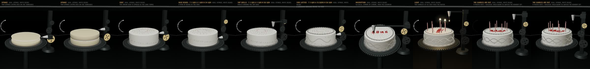

HARMONIC CAKE · OPERATOR
proof.mp4 is gitignored (rights rule for *.mp4 in this folder tree); it is on disk next to this page. strip.jpg below is ten frames of it.

Critic verdict
Not yet run by an independent critic. This builder had no tool to spawn one; the coordinator runs it. The builder's own reading is in the README and is not a verdict.
Next blocking failure
Evolution heads toward one film cake only. Every stage targets the sponge with white beads; a wrong pass decays and the stage repeats, so the cake never becomes a different film cake (mint, red-orange, brown dome). Repair condition: a player who sets different gears at the coat and border stages ends with a cake the critic can match to a different film cake. Second: 生日快乐 reads while the cake is tilted toward you (proof frame 560) but is foreshortened to red marks once it levels (frames 600 on).
Measured (node tests.js, and the recorded trace)
| loading tests.json ... |
Files
- index.html the game (three.js r128 from ana/assets, the device from ana/index.html)
- harmonic.js the pure core: gear train, pass paths, score, cake surface, stages, the game reducer
- tests.js / tests.json the invariant tests and their last results
- trace.json the proof run: player inputs, every machine step, every pass
- record.js the Playwright recorder (mouse input on the device, virtual clock, offline audio)
- README.md thesis, primitives, results, what failed, what is weak